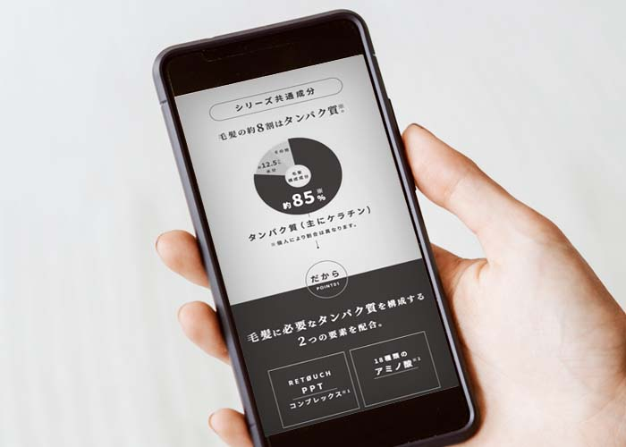
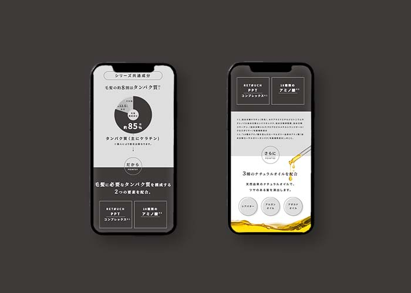

#direction#design
#planning#graphic
LPデザインを構成から作成を担当。必要情報の精査、写真構成など。わかりやすく情報を伝えるためのデザイン提案を行なった。必要なイメージ写真収集、イラストの作成も。
-WEBdesign



LPデザインを構成から作成を担当。必要情報の精査、写真構成など。わかりやすく情報を伝えるためのデザイン提案を行なった。必要なイメージ写真収集、イラストの作成も。